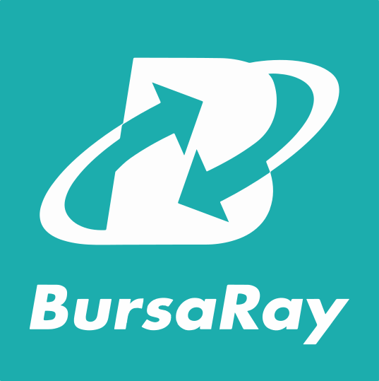

Maksat 114
Gençlik Merkezi · Bursa
Hesaplarımız
Konumumuz
Harita yükleniyor…
Maksat 114 · Nilüfer

BursaRay Altınşehir · 3 dk yürümeAltınşehir Mahallesi, 204. Sk. No:116120 Nilüfer / Bursa
Yol tarifi alSon videomuz
Video yükleniyor…